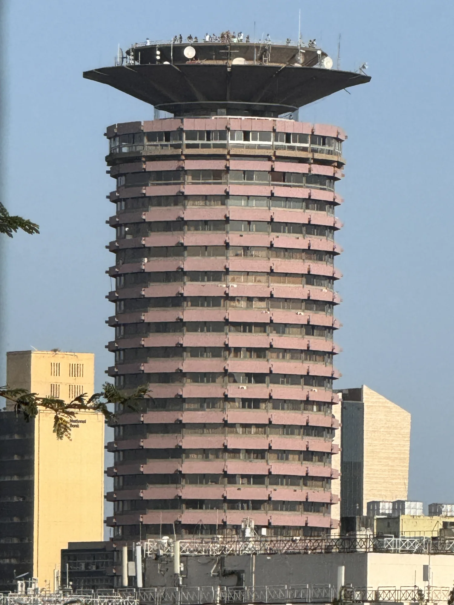
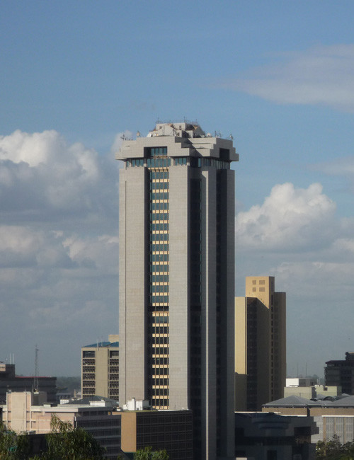
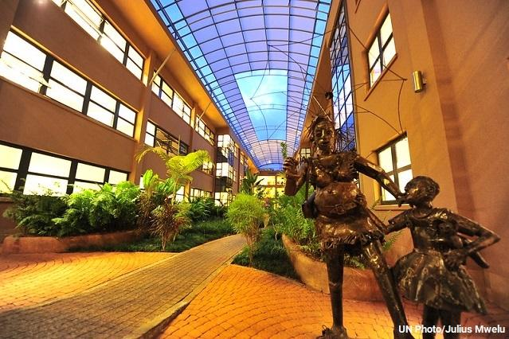
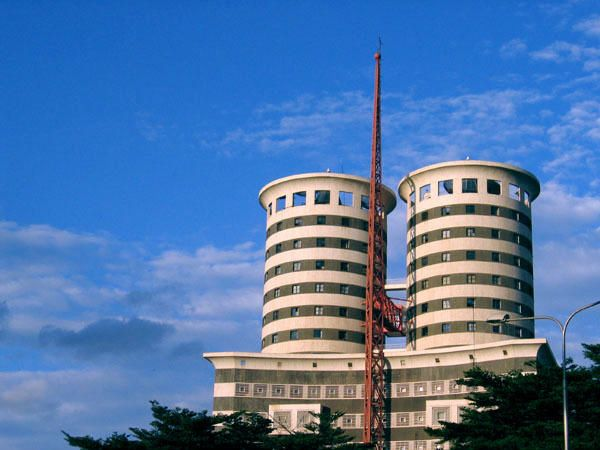

Designing a New Nation
Architects moving to the newly formed nation shifted away from colonial neoclassical designs, embracing the clean lines and raw concrete of the International Style and Brutalism. Strikingly, these buildings did not merely copy Western styles; they adapted to tropical climates by incorporating deep concrete sun-shades (louvers) and open ventilation chambers, giving rise to "Tropical Modernism."
Key Design Philosophies:
- Raw Expression (Brutalism): Bold, sculptural use of reinforced poured concrete, celebrating the structural elements of the building rather than concealing them behind plaster.
- Solar & Wind Adaptation: Strategic building placement and vertical concrete fins were designed to block direct tropical solar heat while allowing cross-breezes to cool the interior without air conditioning.
- Cultural Symbology: Blending modernist geometries with traditional African symbols, such as shields, round houses, and stools.
Iconic Landmarks
KICC (Kenyatta International Convention Centre)
City Square (Built 1973)
Designed by Karl Henrik Nøstvik. Features an iconic 28-story tower resembling a traditional shield and an amphitheater inspired by the conical roof of a traditional round hut. It is the premier symbol of post-independence modernism in Kenya.

Times Tower
Haile Selassie Avenue (Built 2000)
A sleek modern office complex standing at 140 meters. Constructed with a reinforced concrete framework and wrapped in solar-reflective glass, it held the title of the tallest building in East Africa for years.

UNEP Headquarters
Gigiri (Built 2011)
A showcase of ecological modernism. A carbon-neutral facility utilizing solar panels, rainwater harvesting, and natural cooling wells to run sustainably in a park-like savannah environment.

Nation Centre
Kimathi Street (Built 1997)
Designed by Triad Architects. Features twin cylindrical glass towers clad in reflective glazing, representing the transition from post-independence concrete modernism to contemporary glass curtain-wall corporate architecture.
